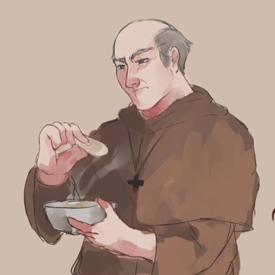
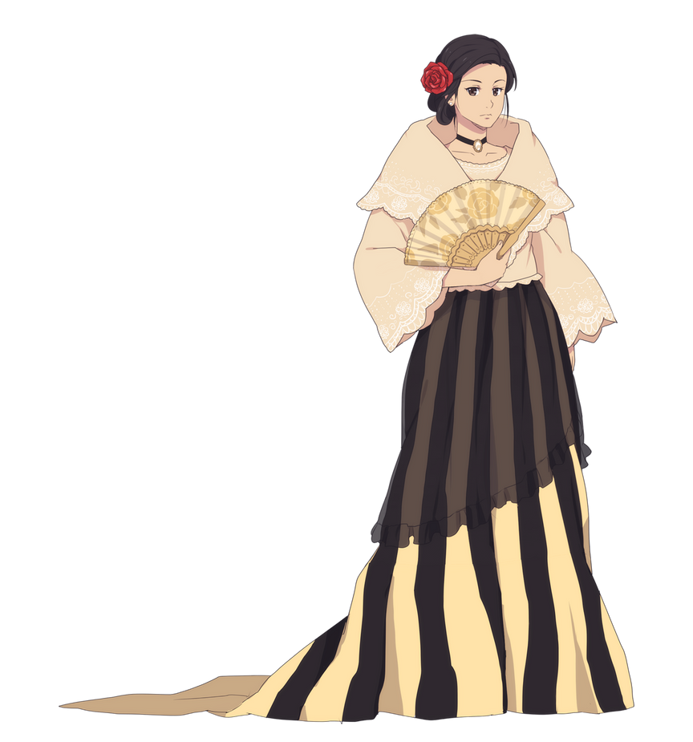
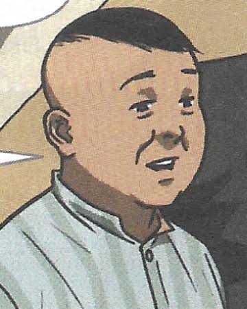
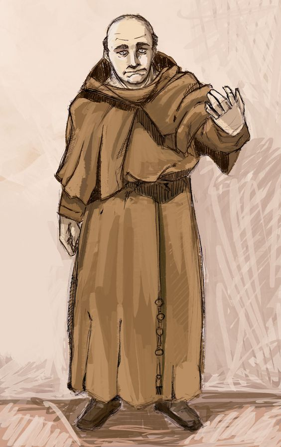

Characters in Noli me Tangere
Image of the Character |
Name of the Character |
Description of the Character |
 |
Crisostomo Ibarra |
A very healthy young man who had just spent 7 years studying in Europe. Though, upon returning to San Diego in the Philippines, some priests treat him and his liberal education with hostility |
|  |
Padre Damaso |
A very arrogant and cruel priest who was hostile to Crisostomo about his education and told him it would not be useful. He also listens to the confessions of the people in San Diego. |
|  |
Maria Clara |
The woman whom Crisostomo loves the most. She is said to be the most beautiful woman in the country. She is also the daughter of the elite Captain Tiago and Donya Pia Alba |
|  |
Kapitan Tiago |
An elite member of society who is close to the fransiscan friars and is the father of Maria Clara. He wants her to marry someone wealthy. |
|  |
Padre Salvi |
An argumentative Dominican Friar who argues with Padre damaso, and asks why he left San Diego after 20 years of being their friar. He abuses his high position in society in order to heighten his influence in society. |
references |
Crisostomo Ibarra Picture: De Guzman, JR. (2020) Noli me Tangere Characters. Artstation. Retrieved from:https://www.artstation.com/artwork/486myY
Padre Damaso Picture: Lumi (2019, Feb 13) I'm just going to leave this here...-Padre Damaso Unofficial Design. Facebook. Retrieved from:https://www.facebook.com/LumiLui/posts/im-just-going-to-leave-this-here-padre-damaso-unofficial-designdamapakpak-damale/465235810679565/
Maria Clara Picture: ichan-desu. (2012, jun 13) Maria CLara. Deviant Art. Retrieved from: https://www.deviantart.com/ichan-desu/art/Maria-Clara-308106659
Kapitan Tiago Picture: Kapitan Tiago. (2020) Noli me Tangere Wiki. Retrieved from: https://noli-me-tangere.fandom.com/wiki/Capitan_Tiago
Padre Salvi Picture: Blitbot Studios. (2021) character design for Rizal's Noli Me Tangere. Pinterest. Retrieved from: https://www.pinterest.ph/pin/101612535322512098/
|